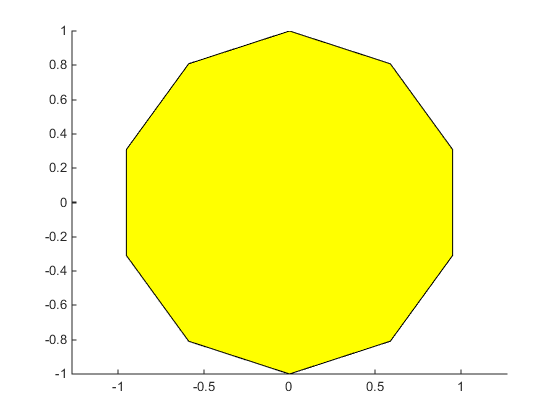
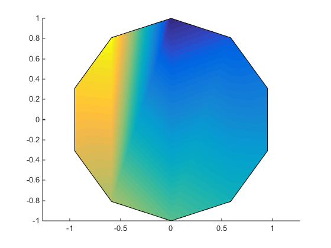

Introduction to Patch Objects
What Are Patch Objects?
A patch graphics object is composed of one or more polygons that may or may not be connected. Patches are useful for modeling real-world objects such as airplanes or automobiles, and for drawing 2- or 3-D polygons of arbitrary shape.
In contrast, surface objects are rectangular grids of quadrilaterals and are better suited for displaying planar topographies such as the values of mathematical functions of two variables, the contours of data in a rectangular plane, or parameterized surfaces such as spheres.
A number of MATLAB® functions create patch objects — fill, fill3, isosurface, isocaps, some of the contour functions, and patch. This section concentrates on use of the patch function.
You define a patch by specifying the coordinates of its vertices and some form of color data. Patches support a variety of coloring options that are useful for visualizing data superimposed on geometric shapes.
There are two ways to specify a patch:
Specify the coordinates of the vertices of each polygon, which are connected to form the patch.
Specify the coordinates of each unique vertex and a matrix that specifies how to connect these vertices to form the faces. This technique is preferred for multifaceted patches because it generally requires less data to define the patch; vertices shared by more than one face need be defined only once. For more information, see Multifaceted Patches.
Behavior of the patch Function
There are two forms of the patch function -- high-level syntax and low-level syntax. The behavior of the patch function differs somewhat depending on which syntax you use.
High-Level Syntax
When you use the high-level syntax, MATLAB automatically determines how to color each face based on the color data you specify. The high-level syntax enables you to omit the property names for the x-, y-, and z-coordinates and the color data, as long as you specify these arguments in the correct order.
patch(x-coordinates,y-coordinates,z-coordinates,colordata)
However, you must specify color data so MATLAB can determine what type of coloring to use. If you do not specify color data, MATLAB returns an error.
x = [0 1 1 0];
y = [0 0 1 1];
patch(x,y)
Error using patch
Not enough input arguments.
Low-Level Syntax
The low-level syntax accepts only property name/property value pairs as arguments and does not automatically color the faces unless you also change the value of the FaceColor property. For example, the statement
patch('XData',x,'YData',y)
draws a patch with black face color because the factory default value for the FaceColor property is the color black.
get(groot,'FactoryPatchFaceColor')
ans =
0 0 0
See the list of Patch Properties in the MATLAB Function Reference and the get command for information on how to obtain the factory and user default values for properties.
Interpreting the Color Argument
When you use the high-level syntax, MATLAB interprets the third (or fourth if there are z-coordinates) argument as color data. If you intend to define a patch with x-, y-, and z-coordinates, but leave out the color, MATLAB interprets the z-coordinates as color data, and then draws a 2-D patch. For example,
patch(x,y,1:length(x))
draws a patch with all vertices at z = 0, colored by interpolating the vertex colors (since there is one color for each vertex), whereas
patch(x,y,1:length(x),'y')
draws a patch with vertices at increasing values of z, colored yellow.
How Patch Data Relates to a Colormap provides more information on options for coloring patches.
Creating a Single Polygon
A polygon is simply a patch with one face. To create a polygon, specify the coordinates of the vertices and color data with a statement of the form
patch(x-coordinates,y-coordinates,[z-coordinates],colordata)
For example, these statements display a 10-sided polygon with a yellow face enclosed by a black edge. The axis equal command produces a correctly proportioned polygon.
t = 0:pi/5:2*pi; figure patch(sin(t),cos(t),'y') axis equal

The first and last vertices need not coincide; MATLAB automatically closes each polygonal face of the patch. In fact, it is generally better to define each vertex only once, particularly if you are using interpolated face coloring.
Interpolated Face Colors
You can control many aspects of the patch coloring. For example, instead of specifying a single color, provide a range of numerical values that map the color at each vertex to a color in the figure colormap.
a = t(1:length(t)-1); %remove redundant vertex definition figure patch(sin(a),cos(a),1:length(a),'FaceColor','interp') axis equal

MATLAB now interpolates the colors across the face of the patch. You can color the edges of the patch the same way, by setting the edge colors to be interpolated. The command is
patch(sin(a),cos(a),1:length(a),'EdgeColor','interp')
How Patch Data Relates to a Colormap provides more information on options for coloring patches.